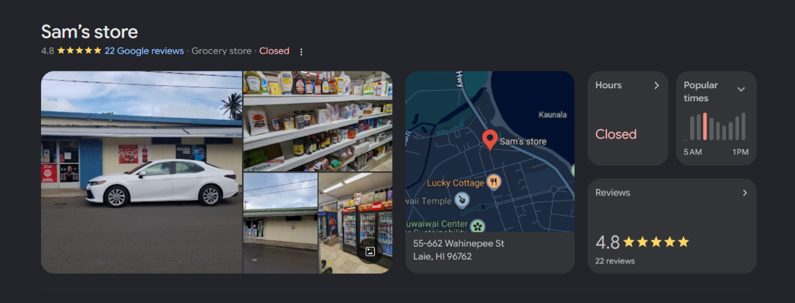

Sam Store is a local grocery store in Laie, Hawaii, serving the community with fresh produce and everyday essentials.

Sam Store is a beloved local grocery store in Laie, Hawaii, known for its friendly service and wide selection of fresh produce, meats, and everyday essentials. It has been serving the community for many years and is a popular destination for both locals and visitors looking for quality groceries in a convenient location.
The store is known for its commitment to providing fresh and high-quality products to its customers. It offers a variety of fruits, vegetables, meats, dairy products, and pantry staples. Sam Store also carries local Hawaiian products, allowing customers to support local businesses while shopping for their daily needs.